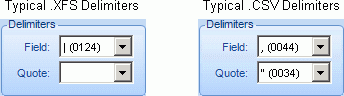

Get started:
-
Before you begin, make sure production files are available to the computer on which the import will be performed. For example, if they are in a network location, ensure that the Eclipse Admin computer has access to that location.
-
Start Eclipse Admin and log in as an administrator.
-
Identify (or create) the case into which the files will be imported.
-
On the Case Management ribbon, select Import > Import Production History.
-
Review the Import Production History window and ensure you have needed information. For example, make sure you know which delimiters are used in the image load file.
Select the needed managing client and case; complete screen entries as described in the following steps.
Cross Reference
File: Enter the path to, or click  and
navigate to, the needed cross-reference file. Cross-reference files map
original image keys to those created during production and may be in one
of the following formats: .CSV, .TXT, or .DAT. These files may be manually
created (such as ASCII delimited text files) or may come from another
and
navigate to, the needed cross-reference file. Cross-reference files map
original image keys to those created during production and may be in one
of the following formats: .CSV, .TXT, or .DAT. These files may be manually
created (such as ASCII delimited text files) or may come from another
For manually created files, the format should be similar to the following:
OriginalImageKey001|ProductionImageKey001
OriginalImageKey004|ProductionImageKey004
OriginalImageKey007|ProductionImageKey007
Each image key is for the first page of each document.
|
|
Note: Files are imported for each document, not on a page-by-page basis. Thus if your cross-reference file includes individual page details for multi-page documents, error messages will indicate “Document not found in case database with this original image key” for all but the first page of a document. This message can be ignored unless it exists for the first page of a document (in which case, the document does not exist in the case and you will need to determine whether the document should be in the case, or the cross-reference file is in error.) |

Delimiters: With the cursor in the Cross Reference File field, select the delimiter(s) used to separate the original from the production image keys if those included by Eclipse are not correct. Typical cross-reference delimiters include those shown in the following figure.

Image Load
File: Enter the path to, or click and navigate to, the needed
production image load file. This is the load file created during production
(an .LFP or .OPT file), which identifies records by the produced image
key.
Delimiters: With the cursor in the Image Load File field, select the delimiters used in the image load file.
-
Field: Select the character that separates each field.
-
Quote: This optional delimiter typically marks the beginning and end of a field (as in .CSV files).
Production
Name: Enter a meaningful name for the set of production images.
This name is listed in
Date Produced: The date of the cross-reference file will be automatically entered in this field; enter a different date if needed.
Notes: Add a brief job explanation if desired.
Evaluate the sample data to ensure it represents case data as expected:
-
Select First line is the header option if applicable to your load file.
-
Adjust the number of sample records if desired.
-
If sample data is not as expected, review your cross-reference and load files and the delimiters defined. Make changes as needed.
When data appears correctly, click Import Production Job.
After the import is completed, click View Log File to check details of the import if needed.
Inform your users that the production history images are available in the case and explain proper use of these files in their case review.